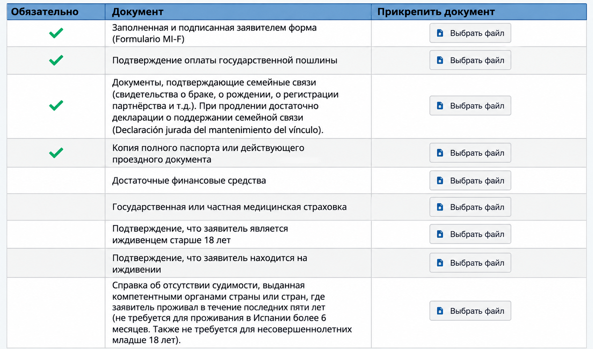

Первичная подача
ВНЖ цифрового кочевника в Испании: документы для члена семьи
Помощь в подаче документов на ВНЖ Испании: t.me/ola_espana
Этот гайд — для члена семьи основного заявителя на ВНЖ цифрового кочевника. Он подходит и когда основной заявитель подается по найму или по контракту.
Для каждого члена семьи отдельная подача. Податься можно одновременно с основным заявителем или позже, когда основной заявитель уже получил разрешение.
Разрешение члена семьи дает право жить и работать в Испании без ограничений — как по найму, так и на себя.
Кто может подаваться как член семьи
По этой категории могут подаваться:
- супруг или супруга;
- зарегистрированный партнер или партнер в устойчивых отношениях;
- несовершеннолетние дети;
- совершеннолетние дети, которые материально зависят от основного заявителя и не создали собственную семью;
- родители и другие восходящие родственники, находящиеся на иждивении.
Для обычной подачи супруга или несовершеннолетнего ребенка пакет заметно проще. Для совершеннолетних детей и родителей нужно отдельно доказывать зависимость.
Список документов
Здесь jurado перевод — официальный перевод, выполненный испанским присяжным переводчиком.
| Документы |
|---|
| Formulario MI-F Подписанное заявление члена семьи. На каждого заявителя заполняется отдельная форма. Официальная форма MI-F. |
| Tasa 790 038 На каждого заявителя оплачивается отдельная tasa, прикладывается подтверждение оплаты. |
| Документ о родстве Для супруга — свидетельство о браке, для ребенка — свидетельство о рождении, для зарегистрированной пары — документ о регистрации союза. Российские документы ЗАГС не требуют апостиля для Испании, но нужен jurado перевод. В памятке UGE по продлению для супруга предусмотрена декларация титуляра о сохранении семейной связи и совместного проживания. Повторное свидетельство о браке в этом перечне не указано. Подробнее ↓ |
| Паспорт члена семьи Полная копия действующего паспорта, все страницы. |
| Достаточные экономические средства — если член семьи подается после титуляра При одновременной подаче титуляр подтверждает нужный доход с учетом всей семьи, и отдельный блок средств в expediente familiar дублировать не требуется. Если familiar присоединяется позже, средства титуляра подтверждаются заново. Подробнее ↓ |
| Государственное или частное медицинское страхование — если член семьи не получает покрытие через испанскую Seguridad Social или иное подтвержденное государственное покрытие в Испании Для обычного супруга или ребенка титуляра по контракту / autónomo отдельный частный полис не нужен, если после одобрения титуляр входит в испанскую Seguridad Social и familiar имеет право быть beneficiario. Для типиченой ситуации по найму нужен частный полис, если нет отдельного документа о государственном медицинском покрытии в Испании. Подробнее ↓ |
| Подтверждение экономической зависимости — если подается совершеннолетний ребенок Нужно доказать, что ребенок соответствует условиям для подачи как зависимый член семьи. Подробнее ↓ |
| Подтверждение нахождения на иждивении — если подается родитель или другой восходящий родственник Нужно подтвердить реальную зависимость от основного заявителя или его супруга. Подробнее ↓ |
| Справка о несудимости — для совершеннолетнего при первичной подаче, если не действует исключение UGE Российская справка — с апостилем + jurado переводом. Не требуется лицам младше 18 лет. Также ее можно не подавать, если заявитель уже имеет испанское разрешение на проживание или пребывание сроком более 6 месяцев и соответствующая справка уже подавалась для его получения. Подробнее |
| Declaración responsable об отсутствии судимости за последние 5 лет — для совершеннолетнего заявителя (скачать) Отдельная декларация на испанском; перевод не нужен. |
| Подтверждение легального нахождения в Испании — если заявление подается из Испании Нужно показать, что именно этот член семьи находится в Испании легально на дату подачи. Declaración de entrada прикладывается только когда она нужна для подтверждения конкретного въезда. Подробнее |
| Designación de representante — если заявление подает представитель Документ должен давать представителю право подписать заявление и подать документы. |
| Дополнительные документы — если их требует конкретный кейс Например, нотариальное согласие второго родителя, дополнительные доказательства зависимости или пояснительное письмо. |
Форма подачи UGE
На скриншоте ниже — раздел загрузки документов из электронной формы подачи UGE для члена семьи цифрового кочевника. Документы, для которых в форме UGE нет отдельного поля, загружаются в раздел «Остальные документы».

Документ о родстве
Супруг или супруга
Приложите свидетельство о браке.
Официального требования иметь свежее свидетельство нет, но рекомендуем документ не старше 6 месяцев на дату подачи, чтобы снизить риск дозапроса.
Для свидетельства, выданного российским ЗАГС:
- апостиль не нужен;
- нужен оригинал / официальный повторный документ;
- нужен
juradoперевод на испанский.
Основание — Canje de Notas entre España y la URSS de 24 de febrero de 1984 о взаимном признании свидетельств органов ЗАГС без легализации. Соглашение продолжает применяться между Испанией и Российской Федерацией. Консульство Испании в Москве прямо указывает, что российские свидетельства ЗАГС не должны иметь апостиль.
Это правило относится не только к браку, но и к другим российским свидетельствам ЗАГС, в том числе к свидетельству о рождении.
Партнер
Если союз зарегистрирован, приложите свидетельство о регистрации pareja de hecho или аналогичный документ.
Если союз не зарегистрирован, UGE требует доказать устойчивые отношения. В обычном случае нужно подтвердить не менее одного года непрерывного совместного проживания непосредственно перед подачей. В качестве доказательств могут использоваться совместная регистрация по адресу, общий договор аренды или собственность, совместные банковские счета и другие документы.
Если у пары есть общий ребенок, год совместного проживания доказывать не требуется, но нужно подтвердить фактические отношения на момент подачи.
Несовершеннолетний ребенок
Приложите свидетельство о рождении. Срок давности не установлен.
Если свидетельство выдано российским ЗАГС:
- апостиль не нужен;
- нужен
juradoперевод.
Для ребенка младше 18 лет справка о несудимости не требуется.
Если ребенок получает резиденцию с одним родителем, а второй родитель не участвует в подаче, UGE может потребовать нотариальное согласие второго родителя на проживание ребенка в Испании.
Важно: нотариальное согласие — это не документ ЗАГС, поэтому российско-испанское соглашение 1984 года на него не распространяется. Для российского нотариального согласия нужен апостиль + jurado перевод.
Совершеннолетний ребенок
Для детей от 18 до 25 лет включительно UGE отдельно проверяет зависимость. Нужно подтвердить, что ребенок:
- не получает доход от работы или государственных выплат;
- учится в учебном заведении с возможностью продолжить обучение из Испании либо находится в активном поиске работы;
- не создал собственную семью.
Для детей старше 26 лет нужно доказать состояние, которое не позволяет им быть экономически самостоятельными.
Родитель на иждивении
Нужно подтвердить само родство и реальную зависимость от основного заявителя или его супруга.
Для экономической зависимости UGE ориентируется, в частности, на помощь в течение как минимум одного года до подачи: переводы денег, оплату жилья и другие регулярные расходы. Также проверяется отсутствие собственного достаточного дохода.
Если зависимость связана со здоровьем, используются медицинские заключения и документы социальных служб.
Для восходящих родственников старше 80 лет UGE исходит из презумпции нахождения на иждивении.
Доход на семью
Доход подтверждает основной заявитель, а не член семьи.
Минимум складывается так:
- основной заявитель — 200% SMI;
- первый член семьи — дополнительно 75% SMI;
- каждый следующий член семьи — дополнительно 25% SMI.
В 2026 году SMI составляет 17 094 € в год. Если перевести его в среднемесячную сумму для расчета DNV, получается 1 424,50 €.
| Семья | Минимальный доход в месяц в 2026 году |
|---|---|
| Только основной заявитель | 2 849,00 € |
| Основной заявитель + 1 член семьи | 3 917,38 € |
| Основной заявитель + 2 члена семьи | 4 273,50 € |
| Основной заявитель + 3 члена семьи | 4 629,63 € |
Если подаетесь одновременно
По актуальной инструкции UGE, если заявления титуляра и членов семьи подаются одновременно, достаточно, чтобы титуляр подтвердил достаточные средства с учетом всей семьи. Отдельно дублировать весь блок доходов в каждом expediente familiar не требуется.
Если член семьи подается после одобрения основного заявителя
UGE просит заново показать, что основной заявитель сейчас располагает достаточными средствами.
Если основной заявитель работает по найму, обычно прикладываются:
- трудовой договор;
- зарплатные листы за последние 3 месяца;
- банковский сертификат / выписка с поступлениями зарплаты за последние 3 месяца.
Если основной заявитель работает по контракту / как autónomo, обычно прикладываются:
- действующий контракт или контракты;
- инвойсы за последние 3 месяца;
- банковский сертификат / выписка с поступлениями по этим инвойсам за последние 3 месяца.
Если текущего дохода немного не хватает до установленного минимума, разницу можно закрыть ликвидными сбережениями. Официально не установлено, какую долю дохода можно заменить сбережениями. Практический ориентир — нехватка примерно 15% от требуемого дохода, но это не установленный лимит. Сбережений должно хватать на покрытие этой разницы за весь срок резиденции. Приложите свежий банковский сертификат об остатке на счете.
Медицинская страховка
Титуляр по контракту / autónomo
Если после одобрения титуляр регистрируется в испанской Seguridad Social как autónomo, UGE прямо указывает, что отдельный документ о частной медицинской страховке не требуется.
Если титуляр уже зарегистрирован в испанской Seguridad Social, при необходимости можно подтвердить его alta и право члена семьи быть beneficiario.
Исключение: незарегистрированная pareja de hecho не приобретает автоматически право быть beneficiario титуляра. Для такого партнера UGE отдельно требует частную медицинскую страховку.
Титуляр по найму
Если титуляр по найму не будет включен в испанскую Seguridad Social и использует международное соглашение о социальном обеспечении, отсутствие частной страховки допустимо только при наличии отдельного документа компетентного органа, который прямо подтверждает медицинское покрытие члена семьи в Испании.
Российско-испанский Convenio de Seguridad Social de 11 de abril de 1994 не включает медицинскую помощь (asistencia sanitaria) в перечень координируемых выплат и покрытий. Поэтому обычное свидетельство СФР о применимом законодательстве само по себе не подтверждает медицинское покрытие в Испании ни титуляра, ни семьи. Для типичного российского кейса по найму нужен частный медицинский полис в Испании, если нет другого документа, прямо подтверждающего право на испанское государственное медицинское покрытие.
UGE не принимает туристическую страховку, полис только с возмещением расходов, страховку с copago или с периодами ожидания (carencia).
Несудимость
Совершеннолетнему члену семьи при первичной подаче нужны:
- справка о несудимости из страны или стран проживания за последние 2 года;
- declaración responsable об отсутствии судимости в странах проживания за последние 5 лет.
Справка не требуется лицам младше 18 лет.
Также UGE указывает исключение: справку можно не подавать, если заявитель уже имеет испанское разрешение на проживание или пребывание сроком более 6 месяцев и эта справка уже подавалась для получения такого разрешения.
Легальное нахождение в Испании
Если заявление подается из Испании, сам член семьи должен находиться здесь легально на дату подачи.
Подтверждение въезда и нахождения готовится по той же логике, что и для основного заявителя: см. отдельный гайд.
Declaración de entrada — не универсальный обязательный файл для каждого familiar. Она нужна, если именно через нее подтверждается въезд / нахождение в конкретном кейсе.
Пример пакета: супруг или супруга при одновременной подаче с autónomo
Для обычного совершеннолетнего супруга пакет выглядит примерно так:
MI-F.pdf— заявление члена семьи.Tasa_familiar.pdf— tasa 790 038 и подтверждение оплаты.Marriage_certificate.pdf— российское свидетельство о браке без апостиля +juradoперевод.Passport_familiar.pdf— полный паспорт, все страницы.Certificate_non-criminal_record.pdf— справка о несудимости с апостилем +juradoперевод.Declaracion_responsable_antecedentes.pdf— декларация об отсутствии судимости за последние 5 лет.DECLARACION_DE_ENTRADA.pdfили другой документ о легальном нахождении — только если нужен по конкретному въезду.DESIGNACION_DE_REPRESENTANTE.pdf— только если заявление подает представитель.
При одновременной подаче:
- отдельную частную страховку супругу титуляра-autónomo не прикладываем, если титуляр после одобрения будет зарегистрирован в испанской Seguridad Social и супруг имеет право быть beneficiario;
- весь блок доходов титуляра в пакет супруга повторно не обязателен — достаточно, что титуляр подтвердил средства на всю семью;
- при первичной подаче
Declaración jurada de mantenimiento del vínculo familiarне заменяет документ о родстве; в форме UGE эта декларация указана именно для продлений.
Если подается ребенок
Для несовершеннолетнего ребенка базово нужны:
- отдельный MI-F;
- отдельная tasa 790 038;
- свидетельство о рождении +
juradoперевод; - паспорт ребенка, все страницы;
- подтверждение легального нахождения в Испании;
- при необходимости — нотариальное согласие второго родителя на проживание в Испании;
- declaración responsable об отсутствии судимости за последние 5 лет — актуальная инструкция UGE оставляет этот документ в общем списке, отдельно освобождая несовершеннолетних только от самой справки о несудимости.
Для российского свидетельства о рождении апостиль не нужен. Для российского нотариального согласия второго родителя, если оно требуется, апостиль нужен.
Если подается несколько членов семьи
На каждого человека создается отдельное заявление MI-F и оплачивается отдельная tasa 790 038.
Документы, относящиеся лично к члену семьи — паспорт, родство, несудимость (если требуется), подтверждение легального нахождения — прикладываются отдельно к его expediente.